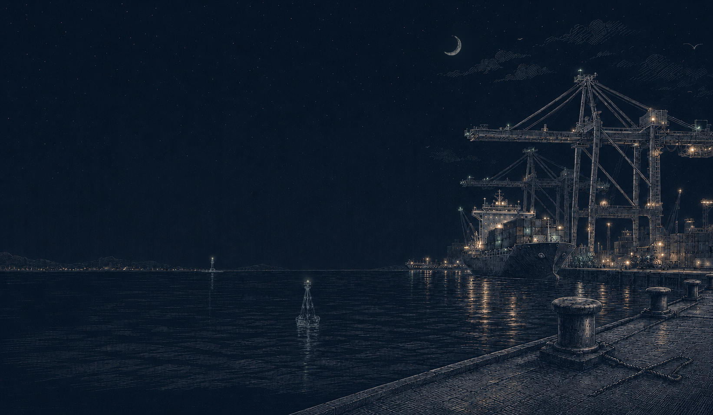
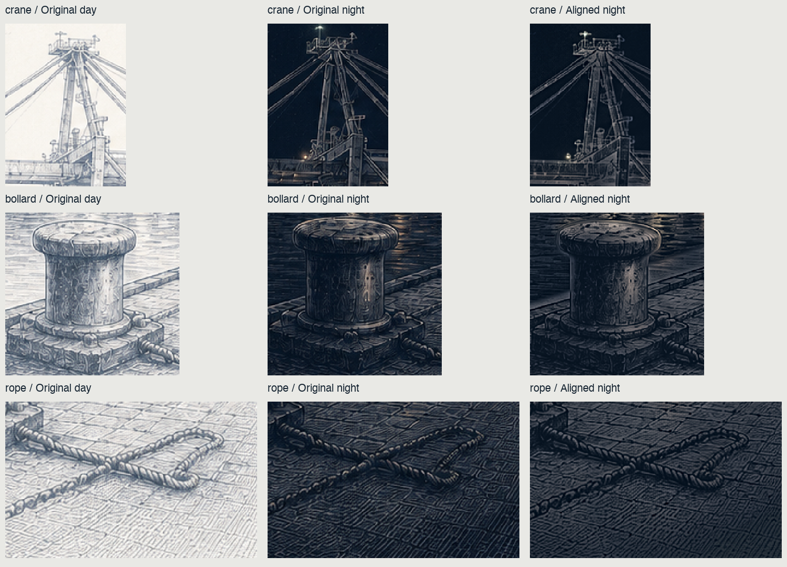

harbor / alignment review
Originals on the left; the candidate on the right. Both are 1642 × 958. The candidate’s day image is byte-for-byte unchanged. Its night rendering uses the daytime drawing for fixed detail, with separate night illumination.
Original pair

Original night ← | → aligned night
Scrub the transition to inspect stationary features. “Native pixels” displays each source pixel at one CSS pixel; scroll inside either image to inspect the right-hand details. Those views scroll together. Night brightness, line contrast, stars, lamps, and reflections intentionally differ.
Alignment evidence: all 11 sampled detail patches have their strongest absolute high-pass correlation at a 0, 0 pixel offset. This is a sampled registration check, not an exhaustive proof of every contour. The fixed-detail rendering comes from one master without resampling, warping, or donor linework.
Download aligned day · Download aligned night · Measurement data · Static before / after
Enlarged details / original day, original night, aligned night